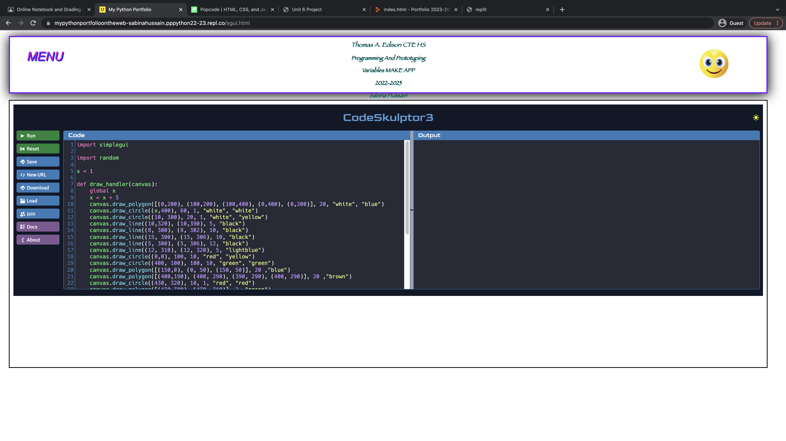
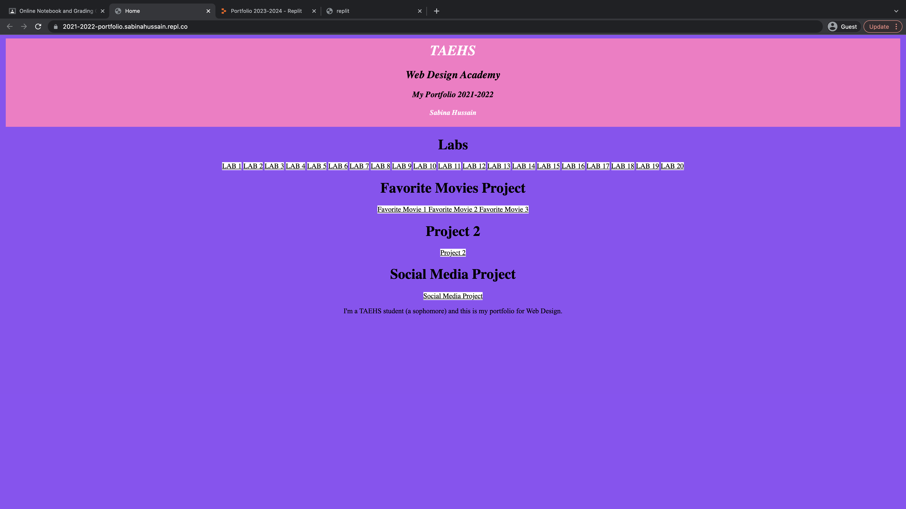
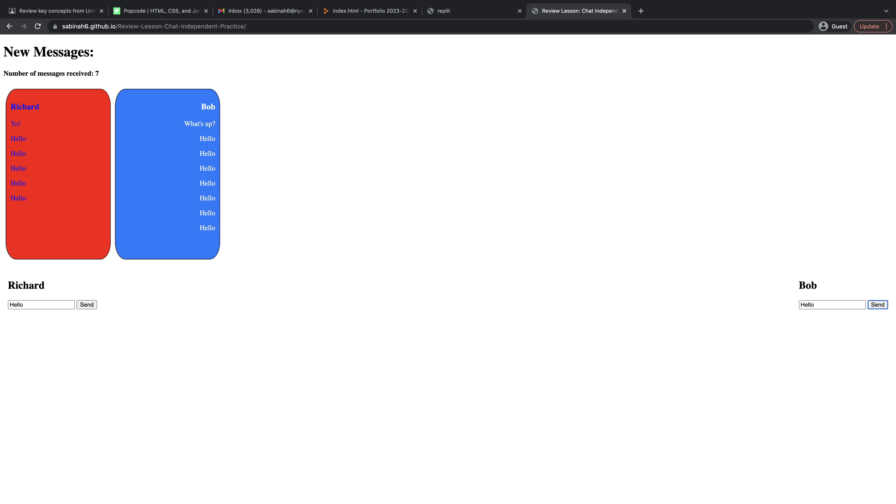
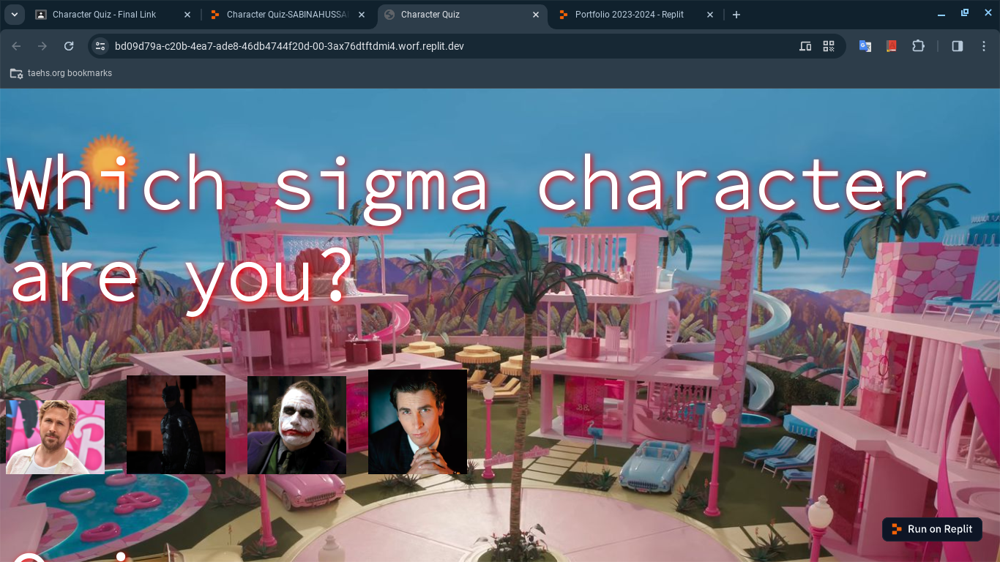
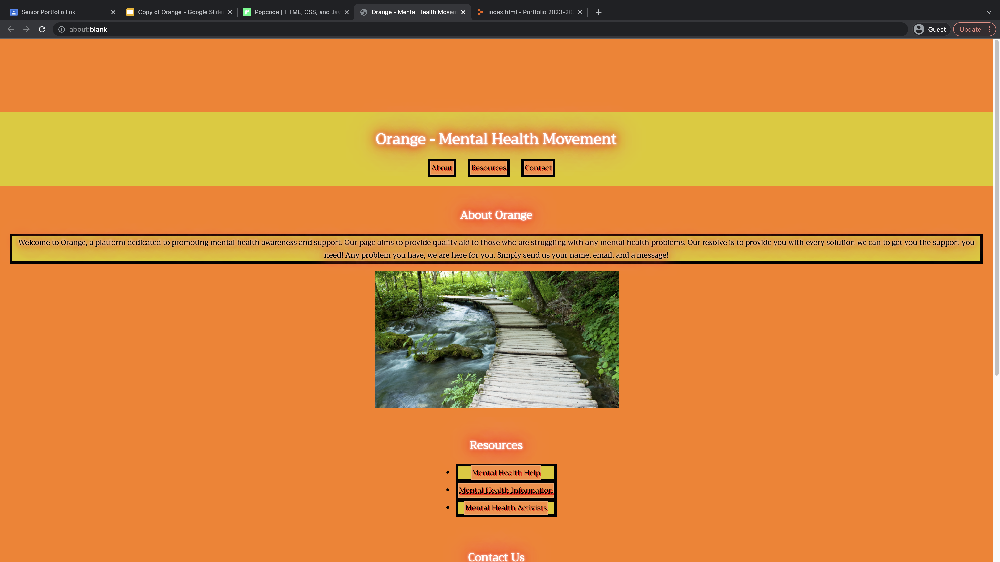

Sabina Hussain's Portfolio 2023-2024
Pds 5-6
- Sabina's Peppa Game jQuery Project
- 22-23 Portfolio 
- 21-22 Portfolio 
- Social Media Project
- HireMe Profile for Kevin
- HireMe Profile for Ayan
- Review of Key Concepts from Units 6-7 
- Character Quiz 
- Gallery of Animals
- Mental Health Movement Project 
- School Website Project

This is my jQuery project. This is where I had to incorporate everything I learned regarding jQuery, such as events, event handlers, actions, selectors, etc. I tried 3 different events: mouseleave, click, and dblclick. The entire purpose of the game is basically Peppa getting what she wants (muddy puddles) and meeting famous presidents. The user gets one chance to change the outcome of the game. If Peppa doesn't get her muddy puddle, she simply loses.
This is my portfolio for my Python projects during junior year. I learned to effectively use Python to draw things, make games, etc.
This is my portfolio during sophomore year. I learned all the basics of HTML and CSS and some JS. I learned how to make headers, make paragraphs, insert images, do hovers, and so much more throughout the year. Soon, I was able to start rather complex projects.

This is my Social Media project, where I had to interview another classmate and do a social media page for the person who inspired them. In this case, I was doing Emanuel's grandmother.


This is where I made HireMe profiles for two other classmates. They're not necessarily how they were supposed to look, but I mostly just tried to meet the requirements of the project.
This is where I learned how to declare variables, append inputs, and use the operator "+."
I made a character quiz of sigma characters. It has an "Enter" button, where it shows the results of the quiz. It also has a "Reset" button, so the user can restart.

I made an image gallery of good-looking animals. With the use of JavaScript/jQuery, I was able to append more images of animals into the gallery.
My groupmates and I created a social action movement for mental health, to promote awareness and help people. The many different features on our website allow users to find resources to help themselves or send us messages.
TEST LINK FOR SCHOOL REDESIGN SITE

I made a website of my school. This project is where I got creative and decided to put the details about my school that I find most important when a new user wants to know about my school. I chose colors that aren't the school colors, rather colors that are more playful and welcoming, to make the user feel jolly.